A sobremesa do seu fim de semana começa no freezer.
Como a Bacio faz cada ponto de venda premium vender mais, com a estrutura que já está instalada.
12 milpontos e refrigeradores reportados pela Bacio
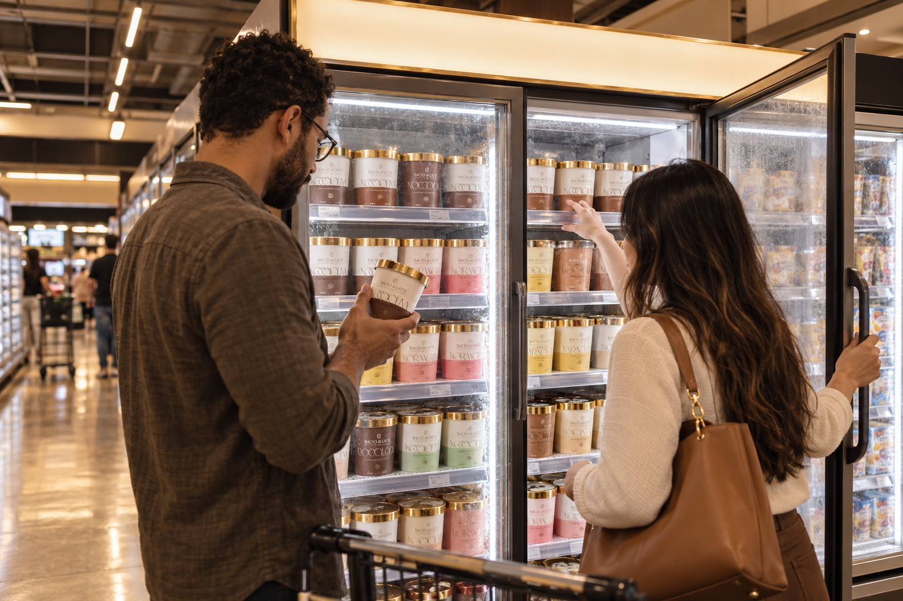
Fonte: EXAME, 14/05/2026.
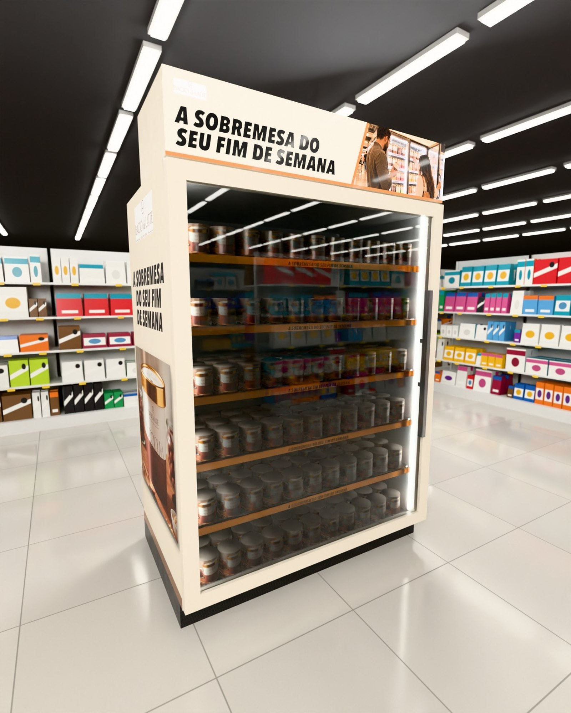
Quem somos
Dois lados do balcão sentados à mesma mesa.
15+anos vividos entre a intenção da marca e o que acontece no canal.
Caique BeckerVeio do varejo. Sabe o que a rede aprova e o que ela descarta.
Daniel CoimbraVeio da indústria. Pensa a marca pelo resultado: lançamento, categoria e venda na ponta.
O que fazemos, de ponta a ponta
Estratégia de PDV
Onde agir, com que ocasião e que indicador.
Displays e materiais
Projeto, protótipo e produção.
Enxoval e ativação
Do ponto extra à loja inteira, com degustação.
Instalação e rastreio
Cada peça com foto, local e data, pelo QR.
Conteúdo e vitrine
Página rica para e-commerce e marketplace.
AR, Códice e jogos
Peças em 3D no seu espaço, displays inteligentes e experiências de convenção.
Nosso diferencial
Quem desenha a peça já aprovou, instalou e cobrou peça igual.
01
Vivemos o trade
Falamos de margem, giro e positivação.
02
Escopo fechado
Em ondas, com entrega física e sem mensalidade.
03
PDV mensurável
Rastreio One Shot e On Timing em cada peça, com foto e data.
04
Plataformas próprias
Códice para displays inteligentes, LAB2WIN e BE2WIN para planejar o trade.
Marcas que confiam na 75 LAB
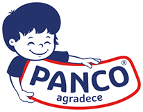
01
Primeiro, entender o freezer.
O que os dados públicos já mostram sobre a Bacio e o premium.
LeituraEstratégiaSoluçãoExecução e medição
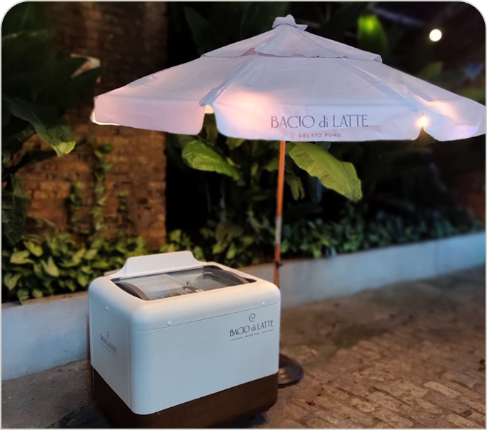
Por que agora
A Bacio tem escala, um verão planejado e um premium que acabou de se reorganizar.
24/08A General Mills confirmou o fim da distribuição da Häagen-Dazs no Brasil.
12 milPontos e refrigeradores reportados pela liderança da Bacio, em maio.
26/27A Live de Verão já foi apresentada ao varejo.
Freezers personalizados e lojas próprias complementam o supermercado.
A promoção Diversão Monstruosa ligou lojas, app e St. Marche.
Fontes: Meio & Mensagem, 24/08/2026; EXAME, 14/05/2026; LinkedIn da Bacio di Latte, consulta em 20/10/2026; promocaobacio.com.br, 18/06 a 08/08/2026.
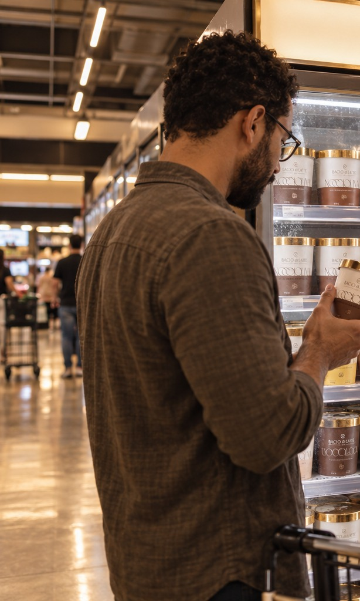
Leitura do desafio
O ganho não está em abrir espaço. Está em vender mais com o que já está instalado.
Problema aparenteA concorrente saiu e abriu espaço
Problema realFazer cada freezer vender mais, com prova e sem comprar mais espaço
-4,9%Premium com pressão de preço
Participação de volume subiu 1,3 ponto, o preço médio caiu. Vender mais precisa render margem.
35%Padarias compram sorvete mais vezes
Frequência 35% maior que nas sorveterias, dado de categoria, sem recorte Bacio.
2Condições de loja
Freezer exclusivo e balcão compacto pedem peças diferentes.
Fontes: Scanntech, publicação oficial, jan a jul/2026 contra 2025; Worldpanel by Numerator, 25/06/2025 (dados de 2024).
Concorrência e shopper
No freezer, quem facilita a escolha concreta leva a compra.
Ben & Jerry's e La BasquePotes premium citados como alternativas relevantes na disputa do freezer.
Marcas próprias das redesPreço e disponibilidade na mão do próprio varejista.
Magnum e gelateriasDisputam a ocasião de indulgência, em formatos diferentes.
Bacio CasaGelato italiano para casa. O espaço a ocupar: ocasião clara, sabor legível, preço visível.
Encontrar
Escolher
Comprar
Experimentar
Antes do freezer: onde está o produto refrigerado?
Na frente: sabor, formato e preço em uma olhada.
Na decisão: mensagem de ocasião, preço, abertura fácil.
Opcional: degustação do SKU à venda, com conservação validada.
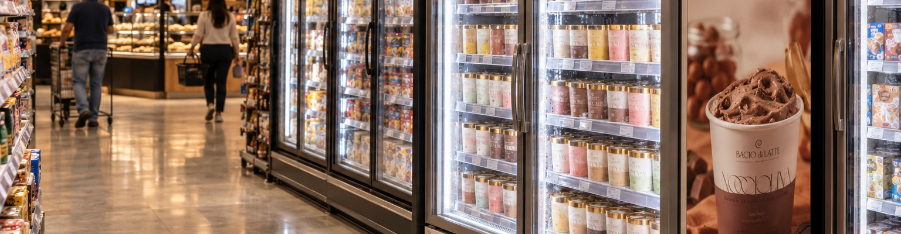
Fonte: Bloomberg Línea, atualização de 25/08/2026; Bacio Casa, baciodilatte.com.br, consulta em 20/10/2026.
02
Poucas lojas certas, uma ocasião clara.
Estratégia de trade e de marketing, juntas no ponto de venda.
LeituraEstratégiaSoluçãoExecução e medição
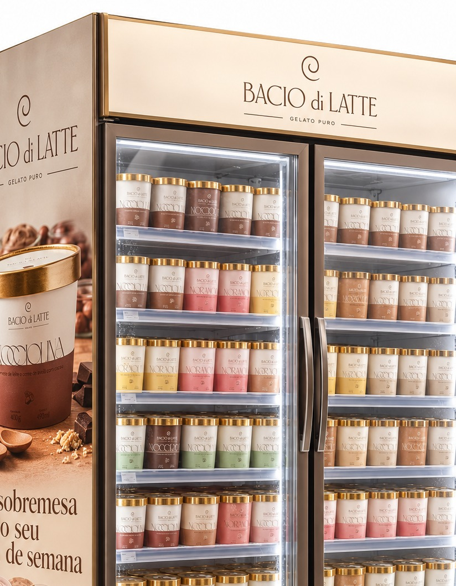
Estratégia de trade
Trade: escolher poucas lojas certas e fazer cada freezer vender mais.
Lojas com demanda, sortimento abastecido, autorização para implantar e histórico de venda.
DemandaSortimentoAutorizaçãoHistórico de venda
Duas peças para duas condições: testeira no freezer exclusivo e vitrine no balcão compacto.
Freezer exclusivoBalcão compactoTesteiraVitrine
Sabor, formato e preço legíveis, com foto e atributo aprovados por SKU.
SaborFormatoPreçoFoto aprovada
Lojas teste e de comparação, instalação registrada e leitura de venda e margem.
Loja testeComparaçãoOne ShotVenda e margem
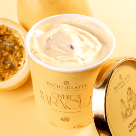
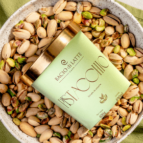
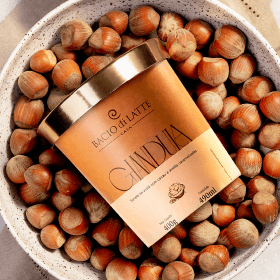
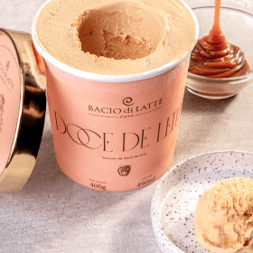
Estratégia de marketing
Marketing: uma ocasião clara, com o produto como protagonista.
"A sobremesa do seu fim de semana". Apetite, textura e sabor no centro. Sujeito ao calendário e à identidade da Bacio.
OcasiãoApetiteSabor
Consumo em casa, com a linha Bacio Casa vendida nos supermercados.
Em casaFim de semanaSupermercado
Fotos aprovadas por SKU, QR para onde encontrar e integração com o app e as promoções que já existem.
Foto por SKUQRAppPromoções
MarketingTradeCompra no ponto
Fontes: baciodilatte.com.br/bacio-casa, consulta em 20/10/2026; promocaobacio.com.br, 18/06 a 08/08/2026.
03
Levar a ocasião até o freezer.
A solução, as peças e o jeito de ver tudo em 3D.
LeituraEstratégiaSoluçãoExecução e medição
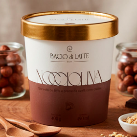
A solução
Um kit que acompanha o shopper do corredor até o pote.
1 Encontrar2 Escolher3 Comprar4 Experimentar, se couber
Testeira iluminada no freezer exclusivo, peça do piloto, e vitrine compacta para a padaria e o café, a segunda porta.
Veja as peças no seu espaço Aponte o celular e abra em 3D e realidade aumentada. Abrir a página das peças
Fonte: baciodilatte.com.br/bacio-casa, consulta em 20/10/2026.
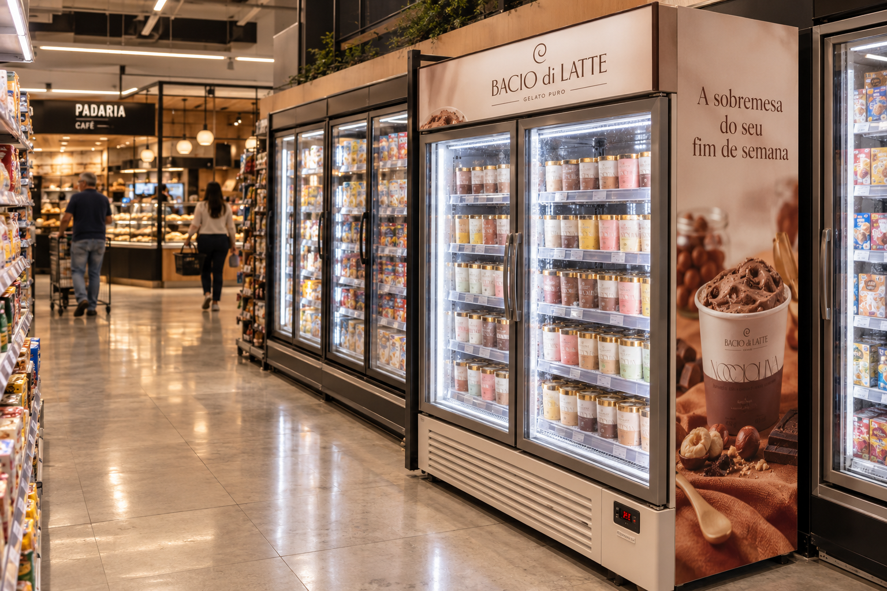
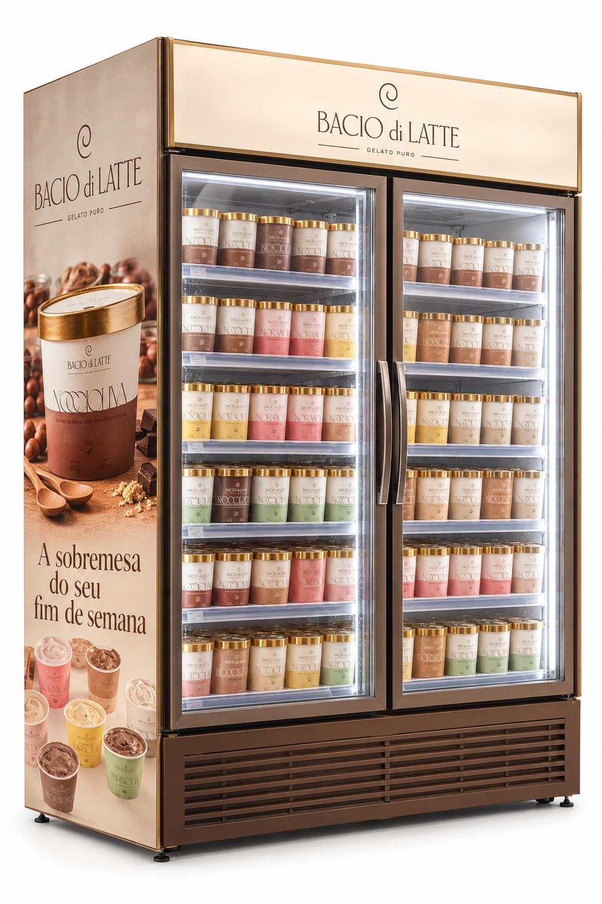
Toque nos pontos
Peça
Testeira iluminada do freezer
O que é
Testeira de 130 x 22 cm no topo do freezer vertical, com laterais impressas e foil cobre no logo.
Como funciona
Acende no topo e diz em uma frase a ocasião: a sobremesa do fim de semana. A frente se troca por campanha, sem mexer no equipamento.
Racional
O freezer exclusivo já é o melhor palco da Bacio. A testeira transforma o equipamento em convite de compra, com aprovação técnica do equipamento e da marca.
Benefícios
Marca: ocasião clara no ponto. Varejo: freezer organizado e bonito. Shopper: encontra e entende a oferta antes de abrir a porta.
Medidas de referência da peça; embalagem Bacio Casa de 490 ml.
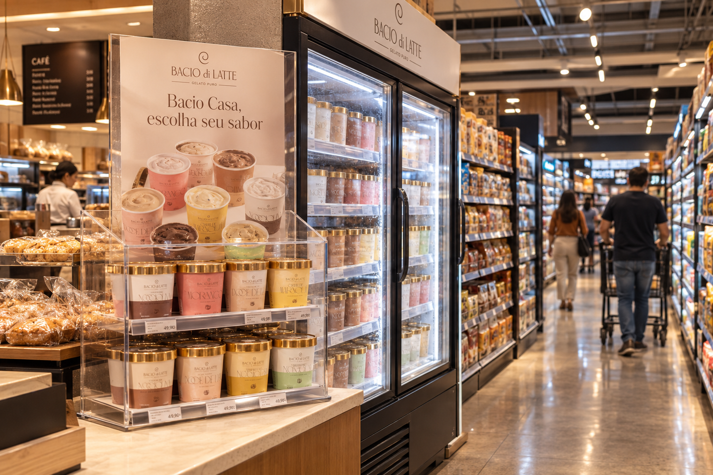
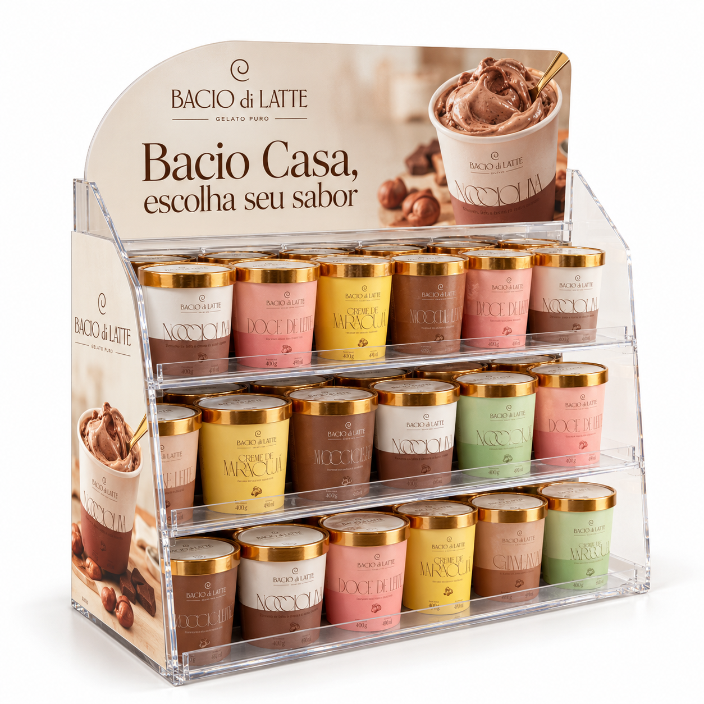
Toque nos pontos
Peça
Vitrine compacta Bacio Casa
O que é
Vitrine de acrílico jateado de 45 x 55 x 30 cm para balcão de padaria e café, com três degraus.
Como funciona
Organiza os sabores em uma régua legível e leva o QR para a lista de lojas e sabores. O arco superior se troca por campanha.
Racional
Loja compacta e padaria não têm espaço para sinalização grande. Padarias compram sorvete 35% mais vezes que sorveterias, dado de categoria que pede um ponto de contato ali.
Benefícios
Marca: presença onde o espaço é pouco. Varejo: montagem simples e reposição fácil. Shopper: vê os sabores e sabe onde encontrar.
Medidas de referência da peça; embalagem Bacio Casa de 490 ml.
04
Provar cada instalação e cada venda.
Rastreamento, piloto, cronograma e indicadores.
LeituraEstratégiaSoluçãoExecução e medição
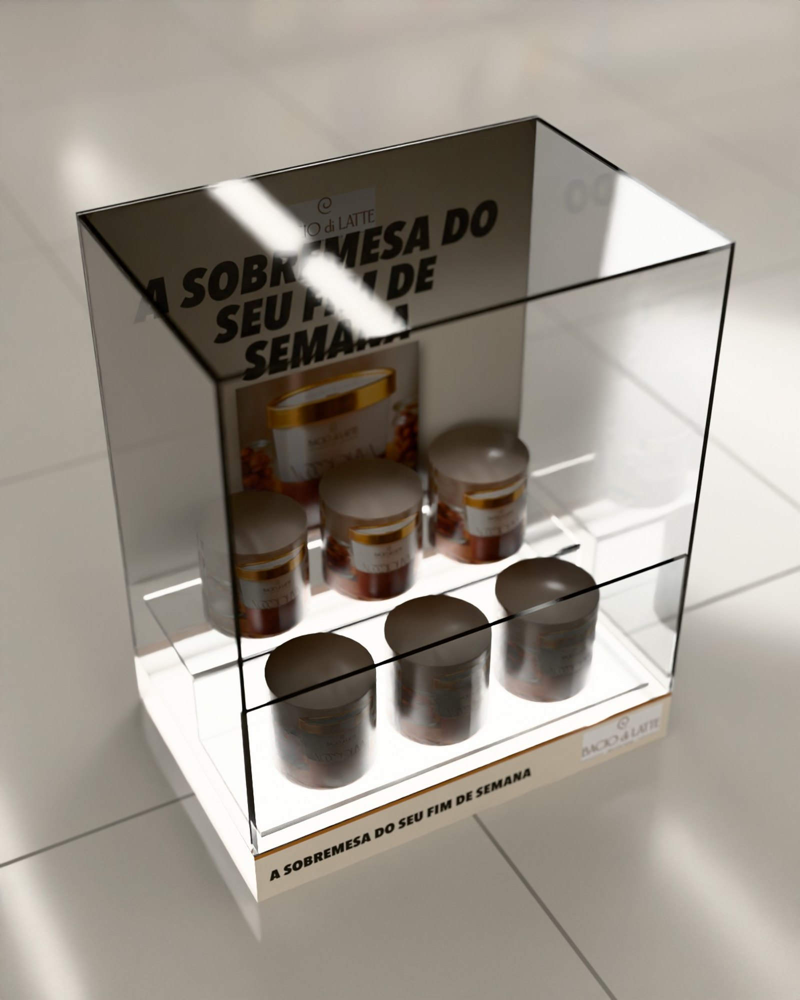
Plano de rastreamento 75 LAB
Cada peça prova que foi instalada, onde e quando.
Peça com QR
Captação
Transmissão
Plataforma
Dados
Insight
Decisão
O que é
O registro da instalação de cada peça, pelo QR da própria peça.
Como funciona
Quem instala escaneia, fotografa a peça montada e o sistema grava loja, data, hora e GPS.
Benefício
A marca sabe, loja a loja, o que foi instalado, sem auditoria presencial.
O que é
O acompanhamento da peça durante a campanha, com tag e, se houver, sensor Códice.
Como funciona
O sinal chega à plataforma e o painel mostra onde a peça está, há quanto tempo e se saiu do lugar.
Benefício
A peça não some nem fica sem ninguém saber. Inclui o One Shot.
Bacio CasaEscolha seu saborEncontre a loja mais pertoVer lojas
O que o QR abre no celular. Evento medido: leitura do QR e toque em Ver lojas.
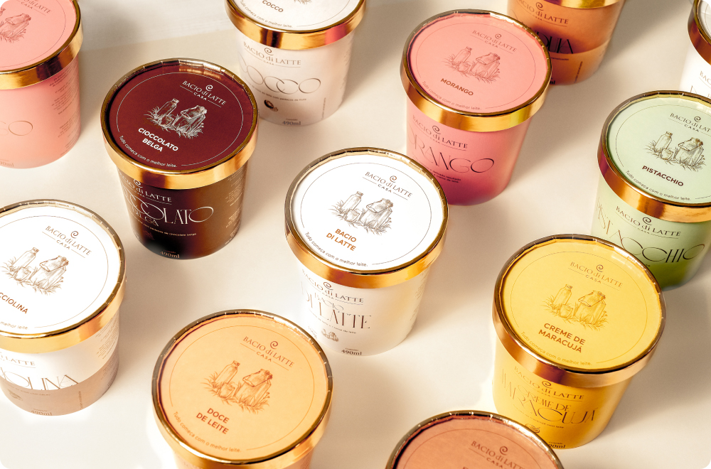
O piloto
24 lojas, 12 com a testeira e 12 de comparação, para decidir com número.
Loja teste, com a testeiraLoja de comparação, semelhante
24lojas em uma região de São Paulo
12+12pares dentro da mesma rede
10semanas, com 4 de campo
Pares com perfil, histórico e tipo de freezer parecidos.
Mesma redeMesmo perfil de lojaFreezer exclusivo nos dois gruposCampanhas iguais nos dois grupos
A diferença é só a testeira. A vitrine entra depois, em padarias e cafés. Amostra e prazo se ajustam com a Bacio e a rede.
Fonte: desenho de piloto 75 LAB, 20/10/2026. Configuração inicial para discutir, ainda sem validação da Bacio.
Cronograma do piloto
Dez semanas do dado ao veredito, com quatro semanas de campo.
S1S2S3S4S5S6S7S8S9S10
Diagnóstico · Semanas 1 e 2
Acesso a 4 a 8 semanas de histórico de venda por loja e SKU, seleção dos pares e autorização da rede.
Projeto e implantação · Semanas 3 e 4
Projeto, protótipo, produção e instalação, tudo registrado pelo One Shot.
Ativação e medição · Semanas 5 a 8
Venda, preço, disponibilidade e presença dos materiais medidos semana a semana, com On Timing onde houver tag.
Decisão · Semanas 9 e 10
Leitura contra as lojas de comparação e decisão sobre o que escalar.
Fonte: plano de piloto 75 LAB, 20/10/2026. Semanas contadas a partir do aceite e do acesso aos dados.
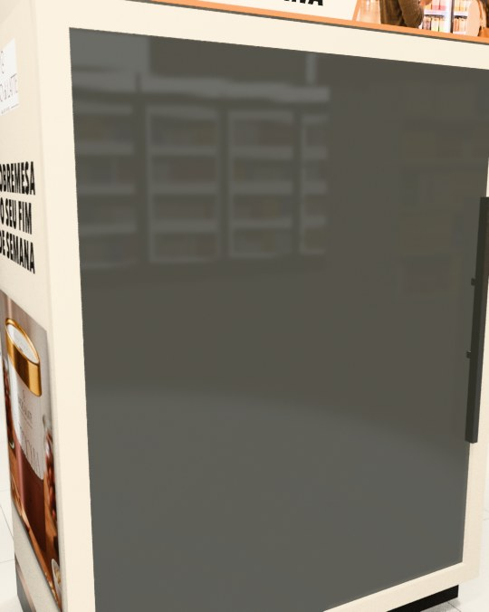
Indicadores
Cinco medidas dizem se o piloto merece escalar.
Unidades adicionais por loja por semana
Linha de baseHistórico de 4 a 8 semanas por loja e SKU
MetaA combinar com a Bacio até a semana 2
Venda total Bacio
Linha de baseVenda das mesmas lojas antes do piloto
MetaA combinar com a Bacio até a semana 2
Receita e contribuição
Linha de baseMargem por SKU informada pela Bacio
MetaA combinar com a Bacio até a semana 2
Execução das peças (One Shot)
Linha de baseZero antes da instalação, medida em todas as lojas
MetaA combinar com a Bacio até a semana 2
Disponibilidade
Linha de baseDias sem produto e reposição do histórico
MetaA combinar com a Bacio até a semana 2
Resultado esperado, não realMede o conjunto das peçasQuatro semanas não provam recompraDonos: Bacio e 75 LAB
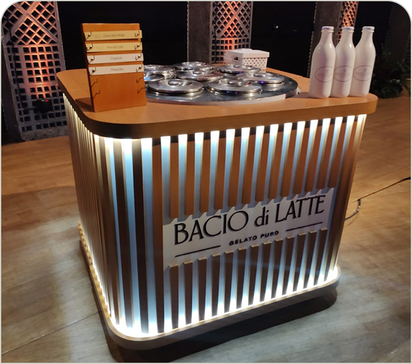
O convite
Um piloto de dez semanas para quebrar a inércia.
Para começar precisamos de três coisas: uma rede ou região, uma pergunta de negócio e acesso aos dados mínimos.
Diagnóstico e definiçãoEscopo fechado: leitura do canal, seleção das lojas e desenho do piloto.
PilotoCriação, protótipo, produção, instalação e acompanhamento do kit, sujeito à configuração escolhida.
ExpansãoImplantação por região e formato, só depois do critério de resultado combinado.
Se o piloto não encaixar, outras portas
Vitrine compacta em padarias, cafés e revendedores de proximidadeVenda complementar na loja própriaAuditoria técnica dos freezers
Próximo passo
A sobremesa do fim de semana começa no freezer.
Uma rede, uma região e uma pergunta. O resto a gente desenha junto.
75 LAB Estratégia, Design e Produção LtdaCNPJ 55.470.982/0001-77CENU · Centro Empresarial das Nações Unidas, Torre Norte, Av. das Nações Unidas, 12.901, Brooklin, São Paulo, SP, CEP 04578-910(11) 8864-8434 · WhatsApp (11) 98676-5634contato@75lab.com.br · 75lab.com.br · @setecincolabCaique Becker · cofundador e Head de Trade caique.becker@75lab.com.br